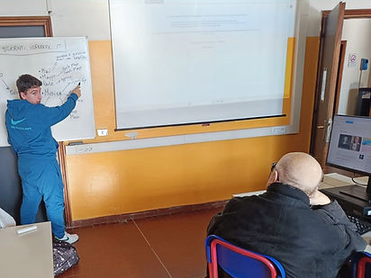
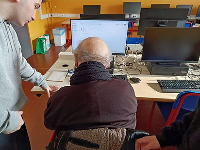

Durata: 7,5 ore (1,5 ore al giorno, per 5 settimane)
Il progetto nasce con l'obiettivo di insegnare a persone anziane, affettuosamente chiamati "nonni", come utilizzare gli strumenti tecnologici. Ad avere le vesti di insegnanti eravamo noi studenti del Blaise Pascal. Il progetto si è svolto grazie alla collaborazione del Comune di Reggio Emilia che ha reso possibile la buona riuscita del progetto grazie alle numerose iscrizioni.
Durante le lezioni abbiamo insegnato come utilizzare il telefono, partendo da funzioni basilari — come scattare una fotografia o effettuare una chiamata — fino ad arrivare a come installare applicazioni come WhatsApp, YouTube e Spotify. Abbiamo anche insegnato come utilizzare un navigatore per essere autonomi negli spostamenti.
Per la parte riguardante il computer abbiamo insegnato come fare ricerche su internet, la creazione di un documento di lavoro, la sicurezza in rete, come effettuare acquisti on-line e come salvare file su una chiavetta o su un drive.
Competenze:
— Competenza personale, sociale e capacità di imparare ad imparare
— Competenza alfabetica funzionale
— Competenza imprenditoriale
— Competenza in materia di cittadinanza
Questa attività è stata molto utile perché mi ha permesso non solo di aiutare altre persone, ma anche di sviluppare pazienza e capacità di comunicazione. Insegnare agli anziani a usare strumenti tecnologici che per noi sono semplici mi ha fatto capire quanto sia importante saper spiegare in modo chiaro e adattarsi ai tempi di apprendimento degli altri.
La parte più significativa è stata vedere i progressi fatti durante le lezioni: all’inizio alcune operazioni sembravano difficili, ma con il tempo i partecipanti sono diventati più sicuri e autonomi. Questo mi ha dato soddisfazione, perché ho visto concretamente l’utilità del lavoro svolto.
Inoltre, questa esperienza mi ha aiutato a migliorare le mie competenze relazionali e a sentirmi più responsabile nel guidare altre persone nell’apprendimento. In conclusione, è stato un progetto molto positivo, sia dal punto di vista umano sia da quello formativo, perché mi ha insegnato che condividere le proprie conoscenze può essere utile e gratificante.